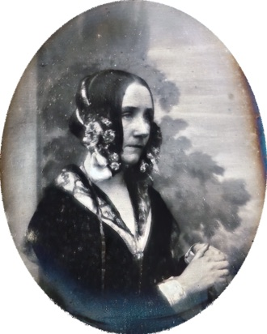
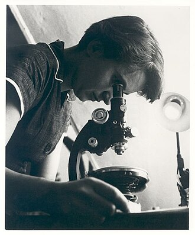

Both licence classes, real files. Ada Lovelace: public domain, creator linked to the file page. Rosalind Franklin: CC BY-SA 4.0, creator plus a licence-deed link plus the source. On a share card that cannot carry a legible credit, the portrait is dropped and the pastel disc is used instead.

Antoine Claudet · public domain · Wikimedia Commons
{kind=link}

Ada Lovelace
Mathematician · United Kingdom · 1815–1852
Sagittarius 17.6° · born December 10, 1815
Birth date sourced. Birth time unknown. Moon sign undetermined.
Without an hour there is no rising sign, no houses and no angles. Everything below is what the day itself settles.

MRC Laboratory of Molecular Biology · CC BY-SA 4.0 · Wikimedia Commons
{kind=link}

Rosalind Franklin
Crystallographer and chemist · United Kingdom · 1920–1958
Leo 2.2° · born July 25, 1920
Birth date sourced. Birth time unknown. Moon sign undetermined.
Without an hour there is no rising sign, no houses and no angles. Everything below is what the day itself settles.